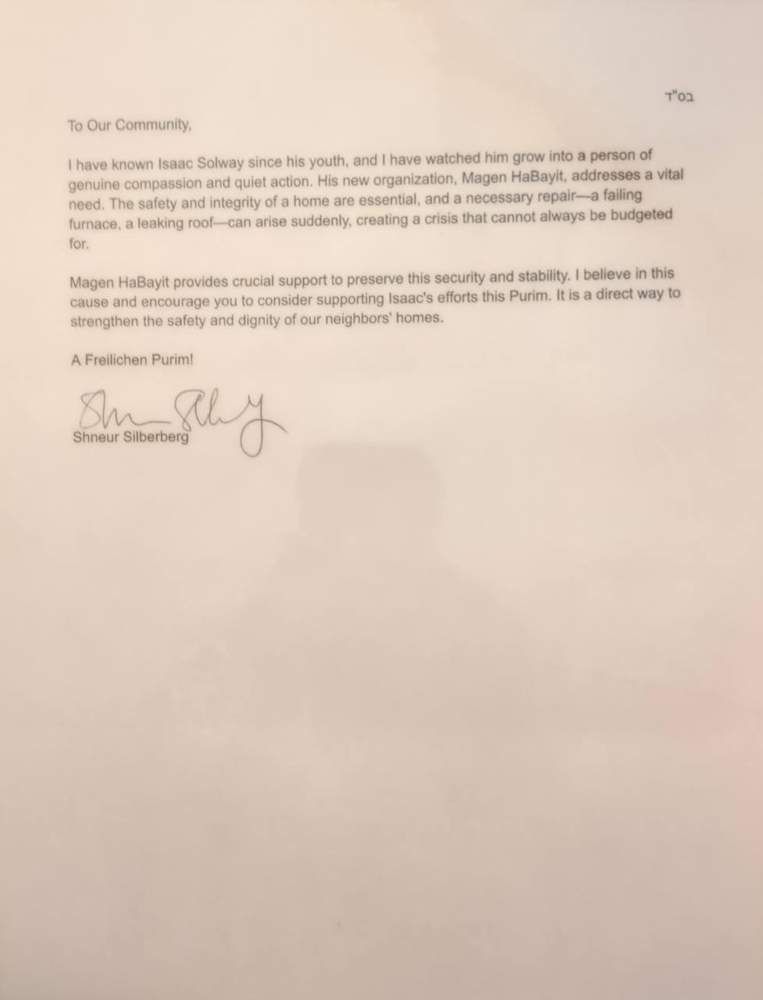

01
Essential repairs
Assistance focuses on necessary work and related expenses that help keep a home safe and functional.
A helping hand. A safer home.
Magen Habayit helps Jewish families cover essential home repairs and related expenses when they need a hand.
Help a family todayOur mission
A leaking pipe or a broken lock can become a big burden. We help with necessary repairs and related home expenses that keep a home safe and functional.
Assistance focuses on necessary work and related expenses that help keep a home safe and functional.
Magen Habayit pays 50% of eligible repair costs. The Jewish family pays the remaining 50%.
Assistance is available as long as funds are available in the nonprofit account. Donations help sustain this support.
A statement from our founder
Isaac Solway
Founder of Magen Habayit
I began working in the trades in 2018, taking jobs with contractors and learning firsthand on job sites. Experienced tradespeople generously shared their knowledge with me, and I approached every opportunity with respect, gratitude, and a willingness to learn.
In 2019, I started my own business. As I grew in my work, I saw how quickly necessary home repairs could become a financial burden. Families could find themselves trying to budget for urgent repairs while keeping up with everyday expenses. No family should have to choose between repairing their home and putting food on the table.
That is why I founded Magen Habayit: to help Jewish families afford the essential repairs that keep their homes safe and functional. Currently serving families in Michigan, our goal is to make that support as straightforward and accessible as possible.
The generosity of others helped me build my career. Through Magen Habayit, I hope to pass that kindness on—giving families a helping hand when they need it most.
Rabbinic support
Letters of support for Magen Habayit and its work helping families with essential home repairs.

Your generosity helps make essential home repairs possible.
Support Magen Habayit